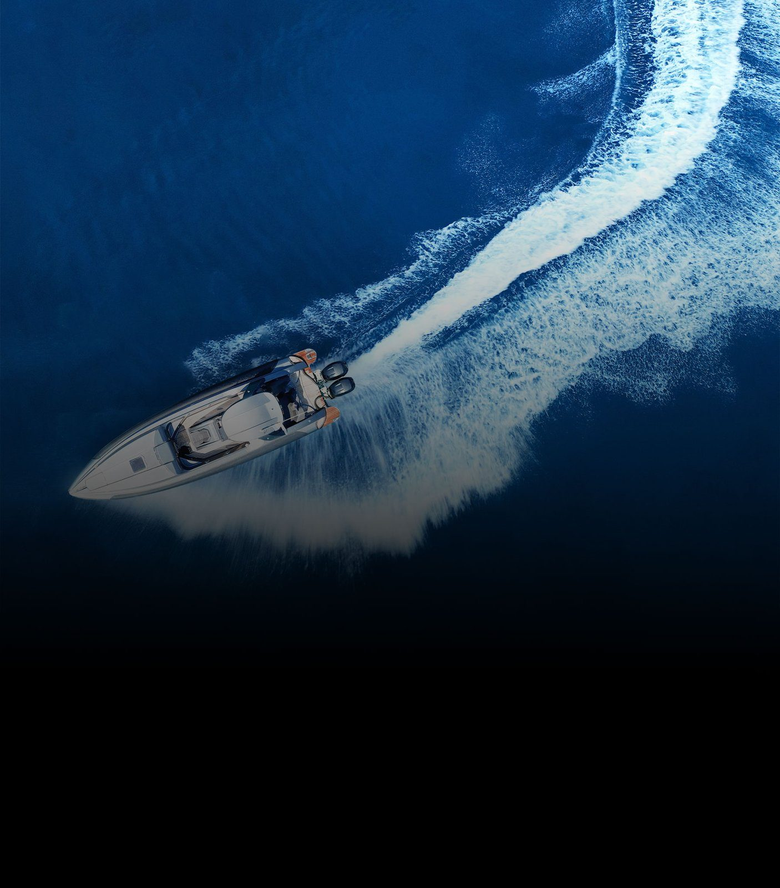

Conferences · Boat & Yacht
BOOT & FUN Berlin at OutVenture 2026
- Dates
- –
- Venue
- Messe Berlin
- Location
- Berlin, Germany
- Format
- In-person
- Category
- Boat & Yacht
- Industry
- Yachting
- Organiser
- Messe Berlin GmbH
- Official website
- https://www.outventure-berlin.de/de
About
BOOT & FUN is the boat and watersports brand inside Messe Berlin's OutVenture outdoor-and-watersports fair. Still upcoming as of 24 Nov 2026. A separate 2027 edition is also listed on the official Messe Berlin calendar.
Topics: boat show, watersports, marine.
No organiser attendance figure found on the official pages fetched 24 Nov 2026 for this upcoming edition. Ranked by our estimated size tier 'large' (30,000-100,000 attendees/visits), a judgement from format, venue and scale, not an official number.